사용자 테스트 & 인터랙션 수정
천장 키넥트가 관객의 바닥 위치만 감지하고, 바닥에만 반응을 주던 버전으로 실제 관객 체험을 진행했습니다.
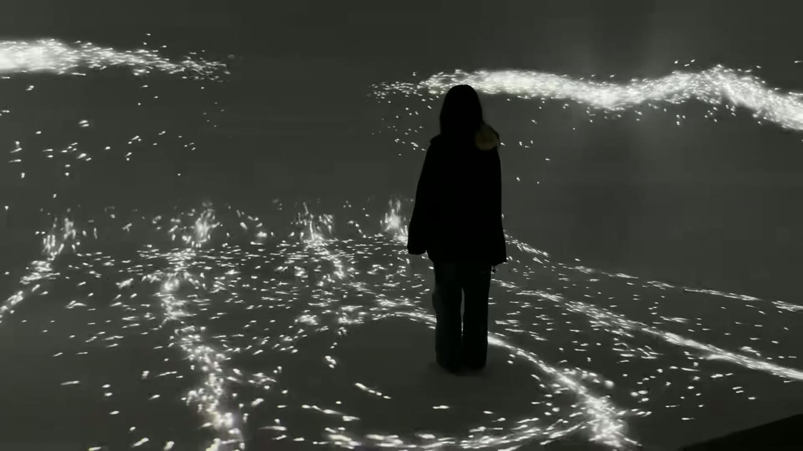
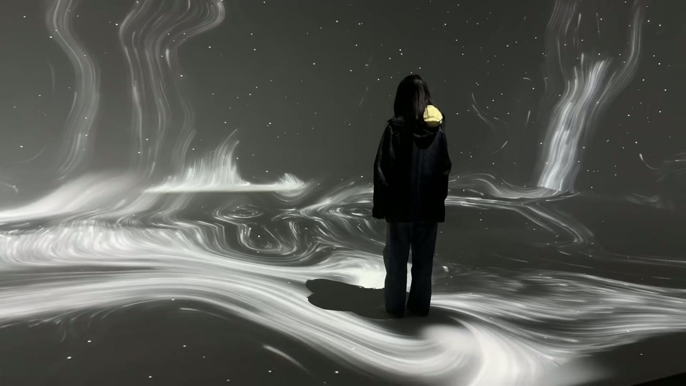
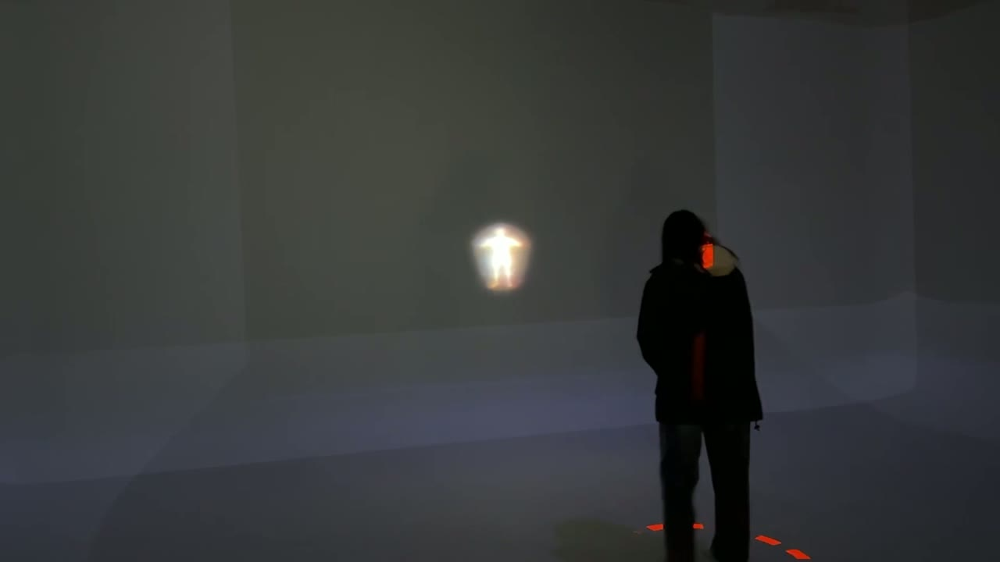
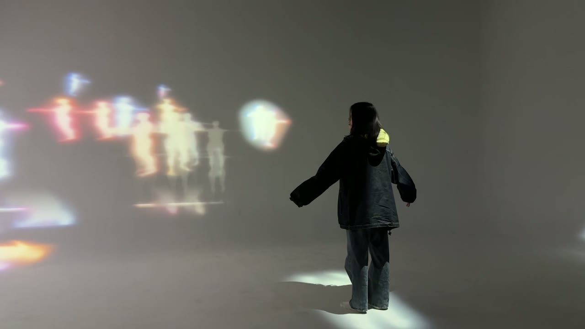
| 분석 | 수정 방향 | 장면에 적용 |
|---|---|---|
| ① 시선 밖의 반응 | 시선이 있는 곳에 반응을 둔다 — 벽도 반응 | 반딧불이: 다가간 벽이 밝아짐 · 물결이 벽을 타고 오름 사람: '나'를 세 벽 모두에 |
| ② 그림자에 가림 | 몸 바깥으로 퍼지는 반응 | 반딧불이: 발밑에서 방 끝까지 퍼지는 동심원 물결 |
| ③ 보는 곳은 무반응 | 벽이 관객에게 응답 — 단, 통제가 아닌 관계의 강도로 | 반딧불이: 벽 가까이 손짓할 때만 짧게 반응 사람: 벽 속 '나'가 내 몸 그대로 움직임 |
| ④ 멈추면 변화 없음 | 머무는 것도 행동이 되게 · 첫 반응은 즉시 · 분명하게 | 반딧불이: 머물면 깨어남 · 어둠 속 관객 둘레만 밝음 사람: 무채색 군중 속 '나'만 선명한 색 |
| ⑤ 몸짓을 기대 | 위치 대신 몸짓을 읽는다 — 키넥트 스켈레톤 | 반딧불이: 몸통 대비 손의 속도로 손짓 판정 사람: 바디 인덱스로 실제 실루엣 복사 |
어둠 속, 관객이 선 자리에서만 반딧불이가 빛납니다. 세계는 관객을 따르지 않고 응답합니다.
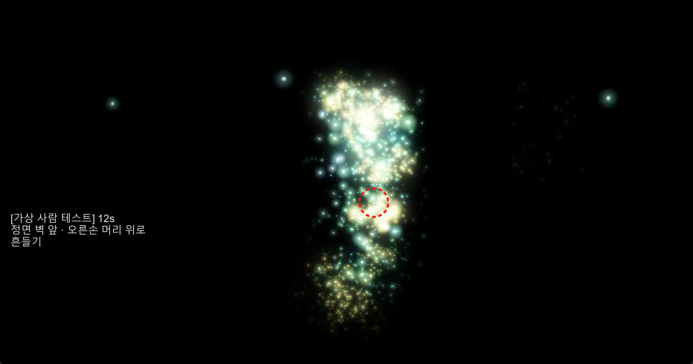
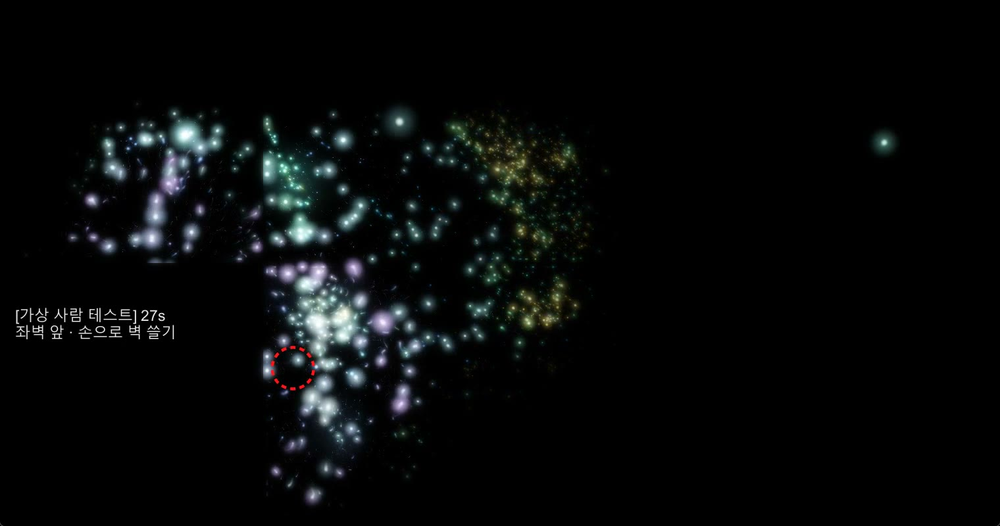
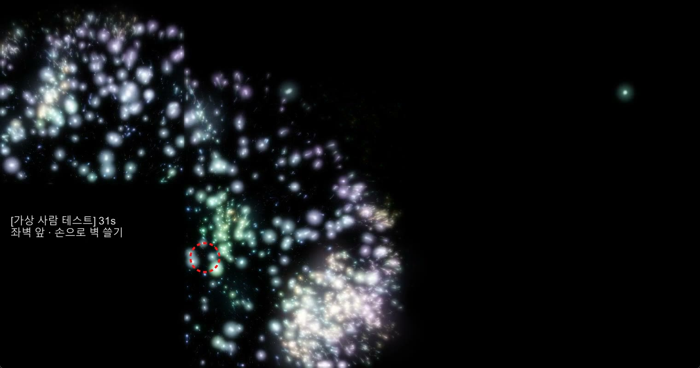
파일 없이 실시간으로 합성하는 소리라, 물결의 위치와 정확히 맞물립니다. 장면이 지켜야 할 평온함을 지키기 위해 맥놀이 · 음 미끄러짐 · 저음 드론은 쓰지 않았습니다.
세 벽은 창문, 그 너머 광장에 수많은 사람이 걷고 있습니다. 그 속에 관객 자신이 서 있고, 바닥은 거울이 됩니다.
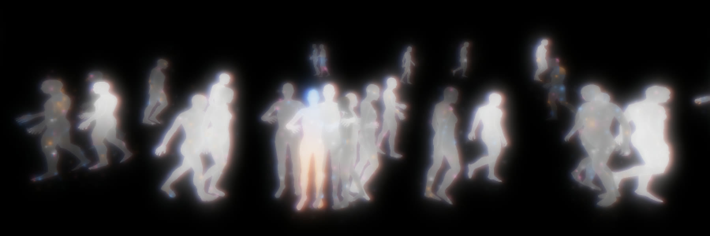
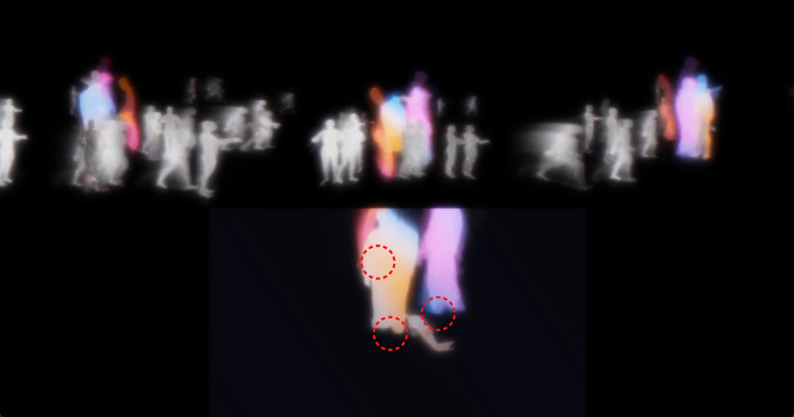
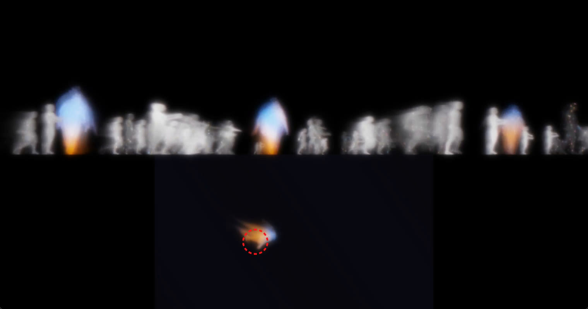
지금까지 만든 장면을 스토리보드 순서로 이어 붙인 러프 편집본입니다. 관객이 처음부터 끝까지 겪을 흐름을 공간에서 확인했습니다. (나비 장면 제외)
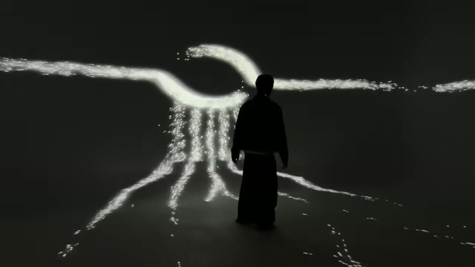
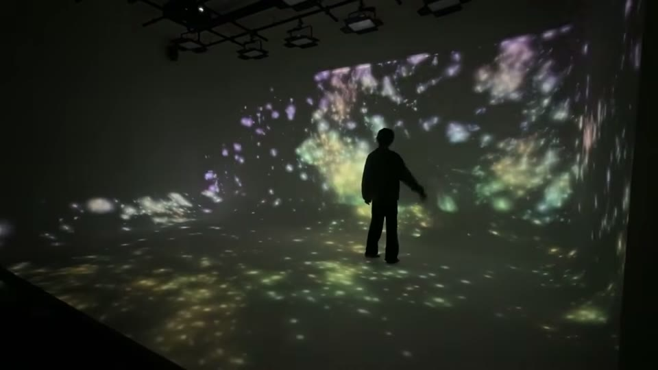
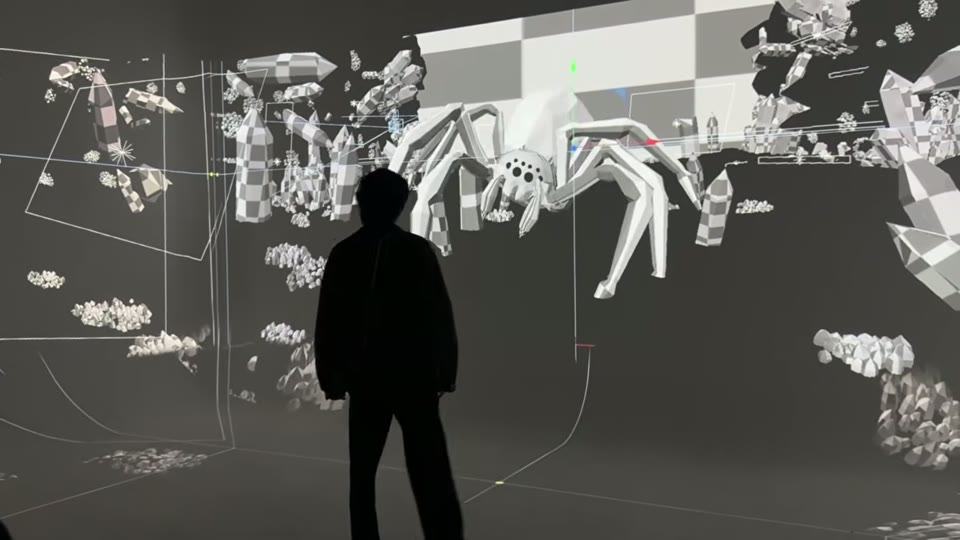
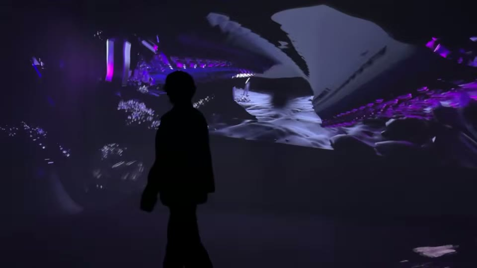
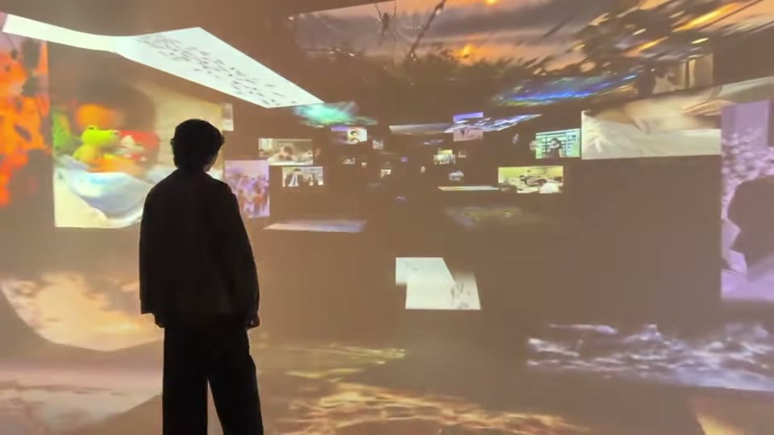
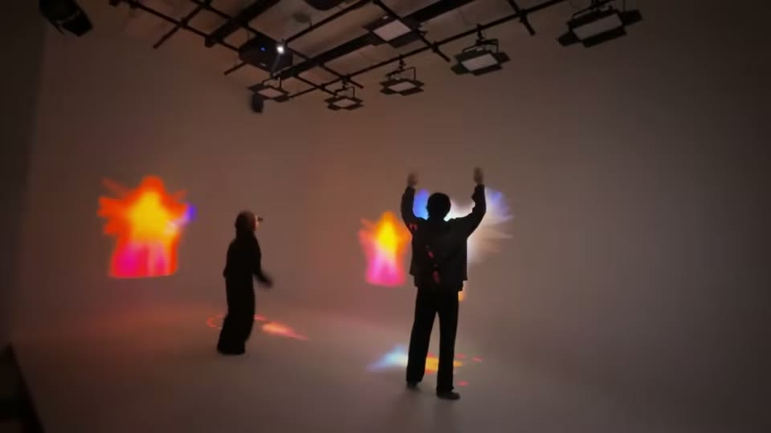
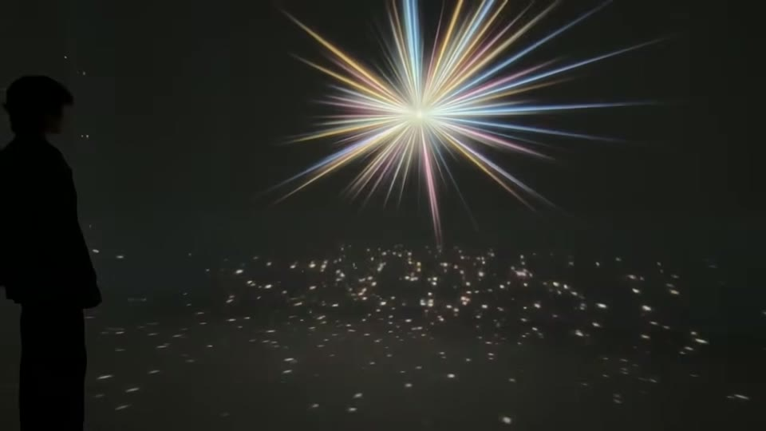
| 구분 | 10.07 1차 테스트 | 10.12 수정 |
|---|---|---|
| 감지 | 바닥 위치만 | 위치 + 스켈레톤 제스처 + 실루엣 |
| 반응하는 면 | 바닥만 | 바닥 + 다가간 벽 + 세 벽의 '나' |
| 반응의 모양 | 발밑 한 점 (그림자에 가림) | 몸 바깥으로 퍼지는 물결 · 벽을 타고 오름 |
| 머무는 관객 | 변화 없음 | 20초 뒤 깨어남 · 물결과 소리 |
| 몸짓 | 반응 없음 | 반딧불이: 손짓에 응답 · 사람: 실루엣 그대로 복사 |
| '나'를 찾기 | — | 무채색 군중 vs 선명한 색의 나 · 실제 키 × 1.7 |
| 전체 흐름 | 장면별 따로 확인 | 개미 → 반딧불이 → 동굴 · 거미 → 터널 → 기억 회랑 → 사람 러프 편집으로 이어서 확인 |